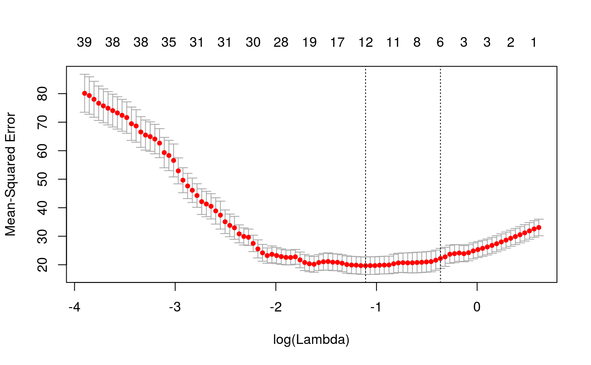
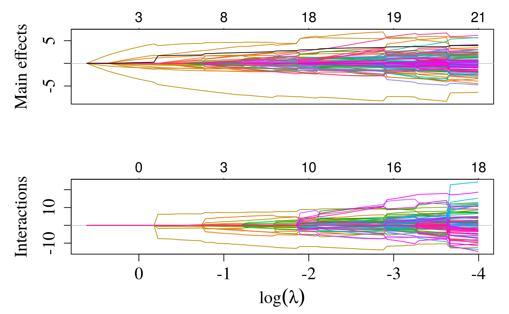

Does k-fold cross-validation for sail and determines the optimal tuning parameter \(\lambda\).
cv.sail(x, y, e, ..., weights, lambda = NULL, type.measure = c("mse", "deviance", "class", "auc", "mae"), nfolds = 10, foldid, grouped = TRUE, keep = FALSE, parallel = FALSE)
| x | input matrix of dimension |
|---|---|
| y | response variable. For |
| e | exposure or environment vector. Must be a numeric vector. Factors must be converted to numeric. |
| ... | other arguments that can be passed to |
| weights | observation weights. Default is 1 for each observation. Currently NOT IMPLEMENTED. |
| lambda | Optional user-supplied lambda sequence; default is NULL, and
|
| type.measure | loss to use for cross-validation. Currently only 3
options are implemented. The default is |
| nfolds | number of folds. Although |
| foldid | an optional vector of values between 1 and |
| grouped | This is an experimental argument, with default |
| keep | If |
| parallel | If |
an object of class "cv.sail" is returned, which is a list with
the ingredients of the cross-validation fit.
the
values of converged lambda used in the fits.
The mean
cross-validated error - a vector of length length(lambda).
estimate of standard error of cvm.
upper
curve = cvm+cvsd.
lower curve = cvm-cvsd.
number of non-zero coefficients at each lambda. This is
the sum of the total non-zero main effects and interactions. Note that when
expand=TRUE, we only count a variable once in the calculation of
nzero, i.e., if a variable is expanded to three columns, then this
is only counted once even though all three coefficients are estimated to be
non-zero
a text string indicating type of measure (for plotting purposes).
a fitted sail object for the full
data.
value of lambda that gives minimum
cvm.
largest value of lambda such that
error is within 1 standard error of the minimum.
if
keep=TRUE, this is the array of prevalidated fits. Some entries can
be NA, if that and subsequent values of lambda are not
reached for that fold
if keep=TRUE, the fold
assignments used
The function runs sail nfolds+1 times; the
first to get the lambda sequence, and then the remainder to compute
the fit with each of the folds omitted. Note that a new lambda sequence is
computed for each of the folds and then we use the predict method to
get the solution path at each value of the original lambda sequence. The
error is accumulated, and the average error and standard deviation over the
folds is computed. Note that cv.sail does NOT search for values for
alpha. A specific value should be supplied, else alpha=0.5 is
assumed by default. If users would like to cross-validate alpha as
well, they should call cv.sail with a pre-computed vector
foldid, and then use this same fold vector in separate calls to
cv.sail with different values of alpha. Note also that the
results of cv.sail are random, since the folds are selected at
random. Users can reduce this randomness by running cv.sail many
times, and averaging the error curves.
The skeleton of this function and the documentation were taken straight
from the glmnet package. See references for details.
Jerome Friedman, Trevor Hastie, Robert Tibshirani (2010). Regularization Paths for Generalized Linear Models via Coordinate Descent. Journal of Statistical Software, 33(1), 1-22. http://www.jstatsoft.org/v33/i01/.
Bhatnagar SR, Yang Y, Greenwood CMT. Sparse additive interaction models with the strong heredity property (2018+). Preprint.
if(interactive()){ f.basis <- function(i) splines::bs(i, degree = 5) data("sailsim") cvfit <- cv.sail(x = sailsim$x, y = sailsim$y, e = sailsim$e, basis = f.basis, nfolds = 10) # Parallel library(doMC) registerDoMC(cores = 4) cvfit <- cv.sail(x = sailsim$x, y = sailsim$y, e = sailsim$e, parallel = TRUE, nlambda = 100, nfolds = 10) # plot cross validated curve plot(cvfit) # plot solution path plot(cvfit$sail.fit) # solution at lambda.min coef(cvfit, s = "lambda.min") # solution at lambda.1se coef(cvfit, s = "lambda.1se") # non-zero coefficients at lambda.min predict(cvfit, s = "lambda.min", type = "nonzero") # predicted response predict(cvfit, s = "lambda.min") predict(cvfit, s = "lambda.1se") # predict response at any value for lambda predict(cvfit, s = 0.457) # predict response for new data set newx <- sailsim$x * 1.10 newe <- sailsim$e * 2 predict(cvfit, newx = newx, newe = newe, s = "lambda.min") }#> 1 #> [1,] 5.3065646 #> [2,] 1.0804191 #> [3,] 5.4984727 #> [4,] 20.6095641 #> [5,] 3.2945835 #> [6,] 1.3678408 #> [7,] 18.1744817 #> [8,] 5.9709248 #> [9,] 7.3491183 #> [10,] 4.7772939 #> [11,] 2.7897300 #> [12,] 13.6071026 #> [13,] 14.4179099 #> [14,] 6.0820515 #> [15,] 19.1573434 #> [16,] 2.8117810 #> [17,] -4.4800964 #> [18,] 5.8707341 #> [19,] 3.5383481 #> [20,] 1.5352662 #> [21,] 9.9017222 #> [22,] 2.3836054 #> [23,] 1.5038095 #> [24,] 9.2674026 #> [25,] -1.1377534 #> [26,] 10.1452333 #> [27,] 6.4215922 #> [28,] -5.2770576 #> [29,] 19.1313821 #> [30,] -1.6664875 #> [31,] 6.1261649 #> [32,] 7.5279827 #> [33,] 5.8207940 #> [34,] 5.0202522 #> [35,] 23.1949775 #> [36,] -2.7814843 #> [37,] 5.5203342 #> [38,] 2.4425143 #> [39,] 3.9318804 #> [40,] 4.7330616 #> [41,] 2.8429633 #> [42,] 0.2950921 #> [43,] 6.3008359 #> [44,] 23.5019386 #> [45,] 5.7965968 #> [46,] 3.2876290 #> [47,] 2.3203953 #> [48,] 23.9291223 #> [49,] 1.2875167 #> [50,] 11.4031605 #> [51,] 3.3925970 #> [52,] 1.3888015 #> [53,] 9.4739013 #> [54,] 8.2232486 #> [55,] 1.5883256 #> [56,] -0.7922827 #> [57,] 5.0571675 #> [58,] 11.2502270 #> [59,] 10.6069961 #> [60,] 1.0914711 #> [61,] -0.6052388 #> [62,] -0.1849495 #> [63,] 9.3609412 #> [64,] 0.6750617 #> [65,] 3.0986991 #> [66,] 2.2690285 #> [67,] 5.1474873 #> [68,] 5.5029911 #> [69,] 11.6345389 #> [70,] 7.0965418 #> [71,] 4.4398305 #> [72,] 1.8726343 #> [73,] 5.9565875 #> [74,] -1.0731197 #> [75,] 4.3808519 #> [76,] 0.7945035 #> [77,] 2.3240037 #> [78,] 19.9531450 #> [79,] 5.7760322 #> [80,] 0.3677776 #> [81,] 3.5612413 #> [82,] 1.3229312 #> [83,] 4.5929384 #> [84,] 3.0847184 #> [85,] 5.5961238 #> [86,] 1.2284338 #> [87,] 3.6199305 #> [88,] -0.9416860 #> [89,] 2.7959115 #> [90,] 6.5637179 #> [91,] 10.3871236 #> [92,] 11.6407027 #> [93,] 5.9487851 #> [94,] 4.0529905 #> [95,] 6.1884433 #> [96,] 2.6320696 #> [97,] 10.5605976 #> [98,] 9.1942353 #> [99,] 5.1563533 #> [100,] 3.5938995